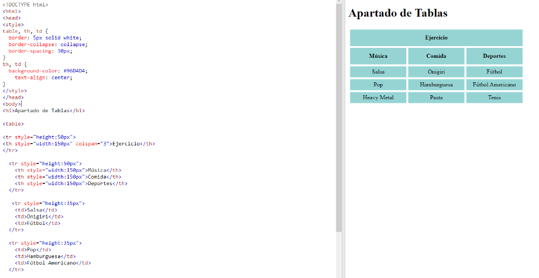

"Las tablas HTML permiten a los desarrolladores web organizar los datos en filas y columnas."
Cada celda de la tabla está definida por una "td" y una "/td" etiqueta.
Todo lo que está entre "td" y "/td" es el contenido de la celda de la tabla.
Cada fila de la tabla comienza con una "tr" y termina con una "/tr" etiqueta.
De forma predeterminada, el texto de
Con la información anterior se han hecho ejercicios con respecto a este apartado, por lo cual se presenta uno:
En la cabeza del script se abre una etiqueta “style”, la cual va a definir diferentes características para las tablas y los espacios de las mismas, cambiando su color de fondo, de letra, etc; con atributos que ya conocemos. Después de esto en el cuerpo se crea la tabla con la etiqueta “table”, se crea un fila con “tr” y en ella se crea una celda de encabezado con “th” la cual se llama ejercicios. Continuando utilizando estos elementos, se colocan diferentes celdas en la tabla con el elemento “td”.